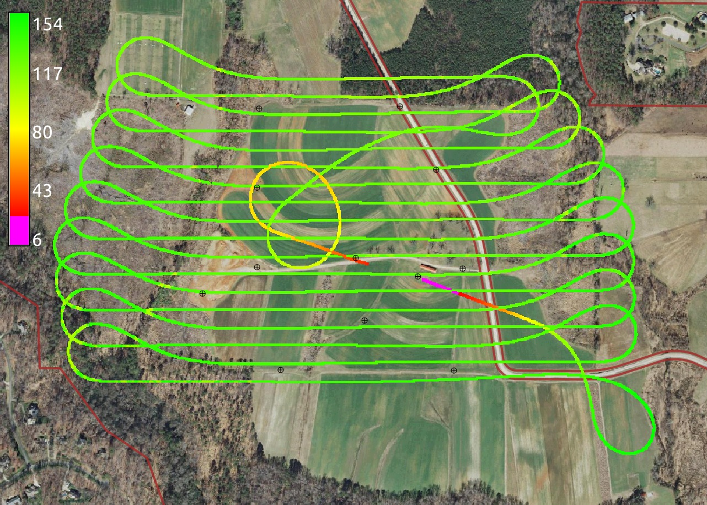
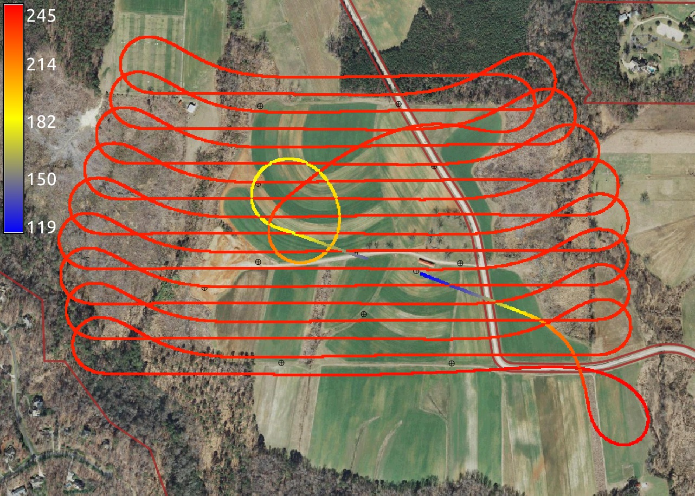

Lidar data analysis:
point clouds, surfaces and voxel models
GIS595/MEA792: UAV/lidar Data Analytics
Outline
- characteristics of lidar-based point cloud data
- topographic analysis from lidar data
- voxel-based analysis of point cloud density
- recent lidar surveys for Wake county and NC
Lidar mapping techologies
- Platform:
- aerial piloted and UAS,
- terrestrial static and mobile
- Sensor:
- multiple return,
- waveform,
- single photon (very dense single return)
- multispectral
image composit

Data acquisition
Principle and resulting point cloud data
Point cloud data definition
Set of (x, y, z, r, i, c, ...) measured points reflected from Earth surface or objects on or above it, where
- (x,y,z) are georeferenced coordinates,
- r is the return number,
- i is intensity,
- c is class,
Additional data: r:g:b, scan direction, others
Point cloud data formats
- ASCII (x,y,z, ...) format - older data, now rarely used
- binary LAS format (header, record info, x,y,z,i, ... ), industry lidar data exchange format
- compressed LAZ format
- proprietary formats, especially for waveform data
Read more at ASPRS LAS1.4 specification
Point cloud data visualization
- Point cloud data are massive: millions of 3D points
- Vector data display / rendering suitable only for smaller data sets
- Custom viewers - adjust rendering to display resolution
- On-line viewer: plas.io
screenshot
Multiple return point cloud in 3D
Multiple return point cloud 3D view of returns
Multiple return point cloud profiles
Multiple return point cloud profile view of returns
Point cloud data properties
Horizontal projection of multiple return point location
Point cloud data processing
Processing:
- analysis of point distribution
- filtering outliers (birds etc.)
- bare earth point extraction
- classification: canopy, buildings ...
- feature extraction: power lines ...
LINKS to references for algorithms Many apply to SfM-derived point clouds as well
Analysis of point distribution
Binning number of points per grid cell - see MEA582 analysis: number of points per cell, range, stddvIdentify data gaps, variability in point densities, supported resolution
Image from Vasek's paper showing variability of point densities
Analysis of point distribution
Increased densities (and potential errors) along swath overlaps
composit - JR overlaps and gaps, Wake county, Mammoth cave, coastal?
Computing DEM/DSM: binning
Methods for DEM: mean, min, max, nearest sufficient for many applications no need to import the points, on-fly raster generation may be noisy, include no-data spots
Computing DEM/DSM: TIN
Methods for DEM: mean, min, max, nearest sufficient for many applications no need to import the points, on-fly raster generation may be noisy, include no-data spots
Computing DEM/DSM: interpolation to raster
Methods for DEM: mean, min, max, nearest sufficient for many applications no need to import the points, on-fly raster generation may be noisy, include no-data spots
Lidar data time series
Issues: vertical and horizontal shifts, differing point densities and patterns, varying spatial extent
more about lidar in GRASS at http://grasswiki.osgeo.org/wiki/LIDAR
Lidar data sources
Public data sources (http in Summary slide):
- CLICK: raw point clouds usually in LAS format
- NOAA Digital Coast: costal point clouds with on-fly binning
- NC Floodplain Mapping: bare Earth: points, 20ft DEM and 50ft DEM with carved channels
- NC data portal
- OpenTopography: NCALM data
text on left flight planning
Flight planning software packages often use low resolution DEMs without trees or buildings. By bringing flight path into GIS and using latest high resolution DSMs we can make sure flight path will not cross any obstacles.
Analyze and visualize:
- flight path altitude
- flight path height above terrain
- check for any obstacles
Flight altitude
Flights with different GSD and overlap
Yellow flight has GSD 4 cm, blue flight has GSD 2.4 cm